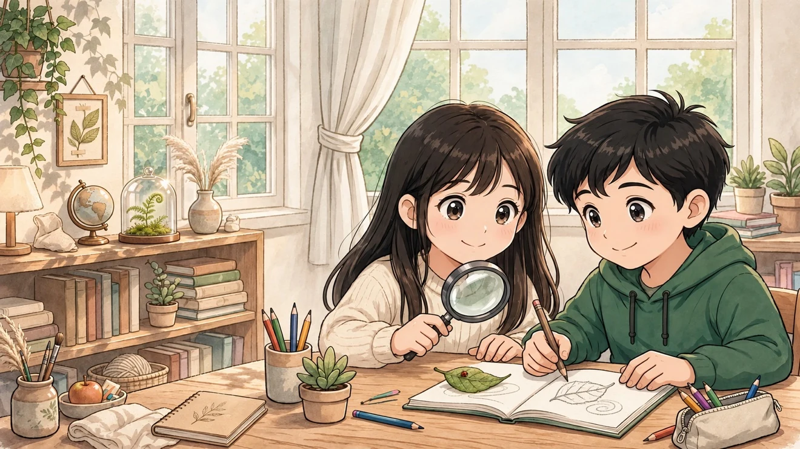
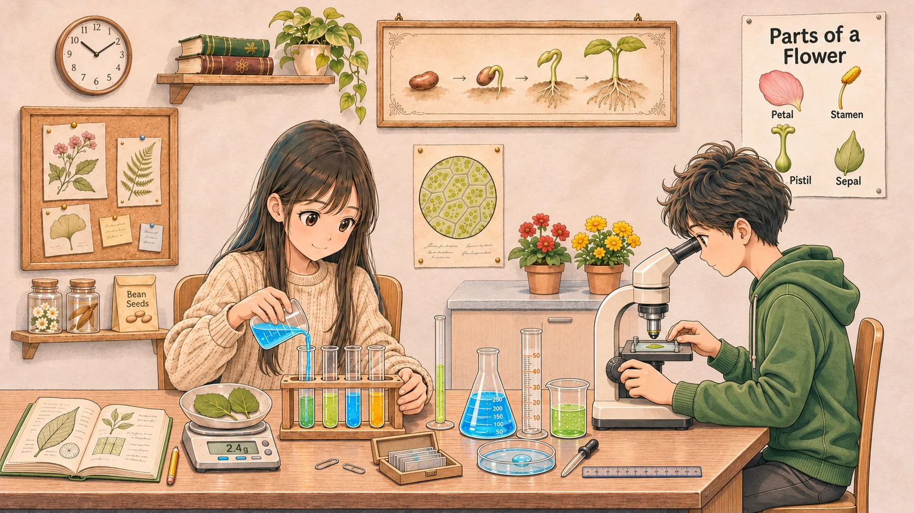

Virginia · Grades 6–8 · SOL
Climb the middle-school ladder, one rung at a time.弗吉尼亚 6–8 年级 · 核心课题，轻松学
Seventy-three unit lessons covering the core topics of Virginia public school grades 6, 7 and 8 — math, English, science, and history & civics — explained in plain words, in English and Simplified Chinese, with quizzes, games and videos. Free for everyone. No sign-up.
First Win · 第一次成功
Your first win takes about five minutes · 第一次成功大约需要五分钟
No sign-up and nothing to install. Do these three steps once, and the fieldbook starts keeping your record on this device. · 无需注册，也不用安装。完成这三步，笔记本就会开始在这台设备上记录你的学习。
Pick your grade · 选择年级
Choose grade 6, 7 or 8 in the start path below. · 在下方快速开始里选择六、七或八年级。
Pick a grade · 选择年级Open one lesson · 打开一节课
Read the big idea, study the worked reasoning, then try the quick check. · 阅读大概念，研究推理过程，再做小测验。
Browse lessons · 浏览课程Mark it complete · 标记完成
When the check holds, mark the lesson done — your record is saved on this device. · 测验通过后标记完成——记录保存在这台设备上。
See my record · 查看我的记录
What is this? 这是什么？
A free ladder through Virginia's middle-school years, built like a friendly schoolbook: pick your grade, learn each idea in about five minutes, then prove it with a quiz or a game. Lessons follow Virginia's Standards of Learning (SOL) courses — the same courses taught in Virginia public schools.
Pick your grade & subject
Grade 6, 7 or 8 — then math, English, science, or history & civics.
Learn the big idea
Short, plain-language lessons with a worked example and key words in both languages.
Quiz, play, climb
Instant-feedback quizzes, flashcards and hands-on labs fill your progress ring.
How are you studying today? 今天怎么学？
The Ladders · 学习阶梯
The lesson ladder — Grades 6, 7 & 8
Tap any card to open the lesson: the big idea, a worked example, flip-card words, a video to watch, and a quick quiz.
No matching lessons
Glossary · 双语词汇表
Unit glossaries — words with explanations, in both languages
Every key word from every unit: the English term, the Simplified Chinese term, and a one-line explanation in each language. Pick a unit or search across all units.
No words match — try a different search.
Play Lab · 动手实验室
Learn by playing with the ideas
Four little labs that make tricky ideas click. Move the sliders, spin the wheel, build a budget — the math answers back.
Mix the perfect lemonade 柠檬水调配
A ratio compares two amounts. Change the lemon concentrate and water, and watch the ratio — and the taste — change.
Task: the recipe starts at 2 : 6. Double the recipe WITHOUT changing its strength — same taste, twice as much.
The triangle that always works 直角三角形
In a right triangle, a² + b² = c². Drag the two short sides and see the long side (the hypotenuse) figure itself out.
Spin and see the odds 转一转，看概率
The wheel is half gold. Theory says gold should land about 50% of the time. Spin a lot — does the experiment agree?
The pointer at the top picks the side — spin and watch where it stops. · 顶部的指针决定停在哪一边——转一转，看它停在哪里。
Tip: the more spins, the closer the results usually get to 50–50. That is the law of large numbers!
Spend $120 wisely 聪明花钱
Civics & economics in real life: split $120 between needs, wants and savings. A common guide is 50% needs, 30% wants, 20% savings.
Saving even a little every time builds a safety cushion — economists call it “paying yourself first.”

Featured · Science Lab
Science you can touch, not just read
Virginia science in grades 6–8 moves from investigating the world around you, to life science in grade 7, to physical science in grade 8. Every science lesson here ends with something to try, spin, pour or measure.
See the science lessons 看科学课程Labs Hub · 实验室中心
Ten hands-on labs — one idea at a time
Ten more interactive labs, each tied to real lessons on the ladder. Every lab loads only when you open it, works with touch, mouse or keyboard, and saves your latest score on this device. The same labs also live inside their lessons.
Watch & Learn · 视频学习
Videos that explain it well
Start with this Khan Academy lesson on forces — a grade 8 physical science topic — then explore more topics below. Links open YouTube searches, so you always land on current videos.
Khan Academy · “Forces” — pushes, pulls, and net force (Grade 8 Physical Science). 力：推、拉与合力（八年级物理科学）。
No Chinese subtitles are uploaded for this video — but YouTube can translate its English captions: in the player, open Settings → Subtitles → Auto-translate → Chinese.
Daily Path
Today's lessons — one per subject
A 180-day path through the whole ladder: one suggested lesson for each subject, every day.
Spaced Review · 间隔复习
Review mistakes due today
Step Through History
U.S. History timeline — Jamestown to today
Step through the big moments one at a time. Every stop links to the lesson that teaches it.
Put them in order
Drag each event into the slots — or tap an event, then tap a slot — so the story runs from earliest (slot 1) to latest (slot 6). Then check your order: every wrong slot gets its own hint.
Keyboard: Tab moves between events and slots. Press Enter or Space to pick up an event, Tab to a slot, then Enter or Space again to place it. On a filled slot, use the “Move earlier” / “Move later” buttons — or the ← → arrow keys — to reorder without dragging.
Word Power · 词汇力量
Flashcards — every key word, two languages
Tap a card to flip it. Words come from all 73 lessons, so shuffling is a whole-course review.
0flashcards dueReview Due · 到期复习
Review due
Mistake Review
Review my mistakes
0mistakes to re-trySOL Challenge · 挑战赛
The SOL Challenge — how high can you climb?
SOL-Style Mode · Timed Practice
SOL-style quiz — 7 questions, 15 minutes
A timed practice quiz in the style of Virginia's SOL tests: one question at a time, flag questions to review, and no answers are shown until you finish. This is a practice mode on this site — it is not the official TestNav application or an official SOL assessment.
New question types (multi-select, drag-and-drop matching, hot spot) also appear inside the pilot lessons: Grade 6 Ratios & Unit Rates, Grade 6 Scientific Investigation and Grade 7 Comparing Texts & Media. They are extra practice — coverage on this site is still described honestly at unit level in Scope & Coverage below.
Test-Day Practice · 考试日练习
SOL practice exam · SOL 模拟考试
Choose a subject and grade or course · 选择科目和年级或课程
Scope & Coverage
What is covered — and what is not yet
Every lesson below covers its SOL topic at unit level.
A note on history order: this site keeps the classic Virginia history sequence — Grade 6: U.S. History to 1865; Grade 7: U.S. History 1865–Present; Grade 8: Civics & Economics. Virginia's 2023 SOL re-sequenced middle-school history — Grade 6: 1865–Present; Grade 7: Civics & Economics; Grade 8: World Geography — so use this note to map lessons to your school's courses.
Progress Report
Progress report
Virginia Grades 6–8 · VA Learning Ladder
Learning progress report
Lessons by grade
Lessons by subject
Flashcards
Mistakes to revisit
Friendly next steps
For Parents · 家长报告
Parent progress report — one page
Phase 4 notes — what was added, keys & rules
Skill Map · 技能地图
Skill map — how the courses connect · 技能地图——课程如何衔接
Each row is one subject climbing from grade 6 to grade 8. Tap any course to filter the lesson ladder to it. · 每一行是一门学科从六年级到八年级的进阶。点按任意课程，即可把课程阶梯筛选到该课程。
Algebra I lessons sit after Math 8 on the ladder. · 代数 I 课程位于八年级数学之后。
Print Studio · 打印工坊
Print as a workbook · 打印成练习册
Pick a lesson, choose what to print, and save the sheet — open the saved file to print it. · 在这里选课程、选打印内容、保存文件，打开后即可打印。
Student pages never print the answer key beside the exercises; answer keys appear only in the separate “with answers” view. · 学生页不会在练习旁打印答案；答案只出现在单独的“含答案”视图中。
Knowledge Map · 知识点掌握图
Knowledge-point mastery map
Learners · 学习者
Manage learners
Learners are stored only in this browser. They are not accounts or password-protected.
Data & Backup · 数据与备份
Data & backup
Resources · 资源
Practice & reference links
Extra practice and background reading for Virginia grades 6–8.
Official SOL Practice Items
TestNav practice, printable questions and writing resources from VDOE — the closest thing to the real test.
Albert — Virginia SOL Practice
Extra SOL-aligned practice questions across subjects and grades.
What is the SOL? (Wikipedia)
A plain-language overview of Virginia's Standards of Learning program.